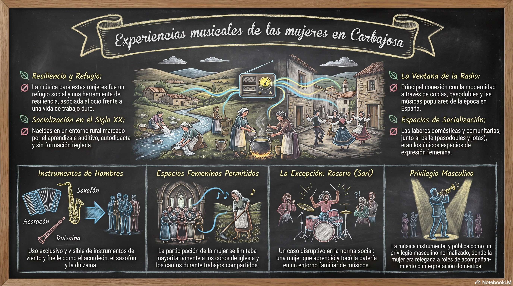

Trabajo de campo etnográfico realizado por el alumnado de la asignatura en Carbajosa de la Sagrada, un pueblo a 5 km de Salamanca capital, recogiendo los recuerdos y vivencias musicales de mujeres mayores del municipio.
En el marco del proyecto de Aprendizaje-Servicio "Interpretación Musical y Prevención de Violencia de Género", las estudiantes de la asignatura Antropología y Folklore (Grado en Musicología, Universidad de Salamanca) realizaron un trabajo de campo en Carbajosa de la Sagrada, una localidad situada a apenas 5 km de Salamanca capital.
Allí entrevistaron a mujeres mayores del pueblo con el objetivo de conocer sus prácticas musicales y la forma en que se relacionaban con la música a lo largo de su vida. Ninguna de las entrevistadas era intérprete profesional: se trataba de prácticas musicales amateur, vividas en el ámbito doméstico, festivo y comunitario, y de conocer un poco más sobre sus experiencias de vida a través de la música.
Los resultados de estas entrevistas se han sintetizado en la infografía que se presenta a continuación, elaborada por el alumnado a partir del material recogido sobre el terreno.
Haz clic en la imagen para ampliarla.

AmpliarSíntesis de las entrevistas realizadas a mujeres mayores de Carbajosa de la Sagrada: la música como refugio frente a una vida de trabajo duro, el papel de la radio como ventana a la modernidad, los espacios de socialización musical permitidos a las mujeres (coros, bailes, labores compartidas), el uso casi exclusivo de instrumentos por parte de los hombres, y el caso excepcional de Rosario ("Sari"), una mujer baterista en un entorno familiar de músicos.
El trabajo de campo realizado en Carbajosa de la Sagrada se enmarca en la tradición de la historia oral aplicada a la etnomusicología: a través de entrevistas semiestructuradas, las estudiantes recogieron los testimonios de mujeres mayores sobre cómo aprendieron música, en qué contextos la practicaban (la radio, el baile, la iglesia, las labores domésticas y agrícolas) y qué lugar ocupaba esa práctica musical en sus vidas cotidianas.
Esta metodología permite recuperar la memoria musical de personas cuya relación con la música nunca fue profesional ni pública, pero que constituye una parte esencial del patrimonio musical inmaterial de las comunidades rurales. Frente a los relatos centrados en figuras consagradas, el trabajo de campo pone el foco en las prácticas amateur y cotidianas, mayoritariamente femeninas, que rara vez quedan documentadas.
El análisis de los testimonios recogidos permite además observar, desde una perspectiva de género, cómo se distribuían los roles musicales en el entorno rural salmantino del siglo XX: qué instrumentos y espacios estaban reservados a los hombres, en qué contextos se permitía la participación femenina, y qué casos excepcionales rompían con esa norma social. Este ejercicio conecta directamente con los objetivos del proyecto de Aprendizaje-Servicio, al situar la prevención de la violencia de género en un marco de reconocimiento de las trayectorias musicales silenciadas de las mujeres.